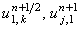

|
2.3. Метод решения с использованием схемы расщепления.
Для решения неявных разностных схем (8.8)-(8.11), аппроксимирующих
дифференциальное уравнение (8.1), используется метод дробных шагов, подробно рассмотренный нами
при изучении методов решения двумерных дифференциальных уравнений параболического типа. Суть метода
дробных шагов заключается в расщеплении интервала  t пополам (см. рисунок), что позволяет представить
неявную разностную схему в виде двух подсхем, каждая из которых имеет более простой метод решения.
Рассмотрим методику решения неявных разностных схем (8.8)-(8.11) на примере разностной схемы (8.8). t пополам (см. рисунок), что позволяет представить
неявную разностную схему в виде двух подсхем, каждая из которых имеет более простой метод решения.
Рассмотрим методику решения неявных разностных схем (8.8)-(8.11) на примере разностной схемы (8.8).
Преобразуем с помощью метода дробных шагов неявную разностную схему (8.8) в схему расщепления:
Первая подсхема аппроксимируется на первом полушаге интервала t и является неявной по координате x.
Вторая подсхема аппроксимируется на втором полушаге интервала t и является неявной по координате y.
Складывая обе подсхемы, получаем соотношение, отличающееся от разностной схемы (8.8) только тем,
что производная по координате x аппроксимируется в нём не на (n + 1)-ом шаге по времени,
а на шаге (n + 1/2):
Данное соотношение показывает, что схема расщепления (8.12) имеет, как и неявная разностная схема (8.8),
первый порядок аппроксимации и по времени, и по каждой из координат:
Каждая из подсхем схемы расщепления (8.12),
являясь аналогом неявной разностной схемы для одномерного дифференциального уравнения в частных производных первого порядка,
абсолютно устойчива и решается с помощью соответствующего рекуррентного соотношения:
Для реализации рекуррентных соотношений (8.13) требуется знать значения ,
определяемые с помощью граничных условий:
|